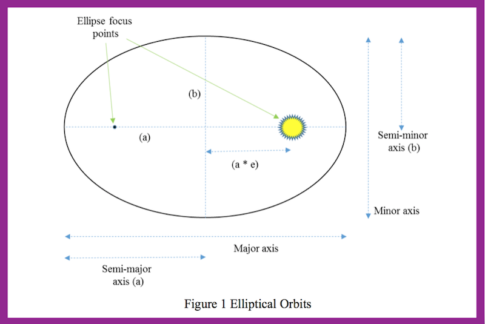
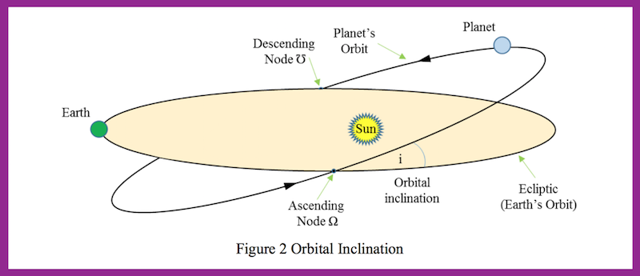
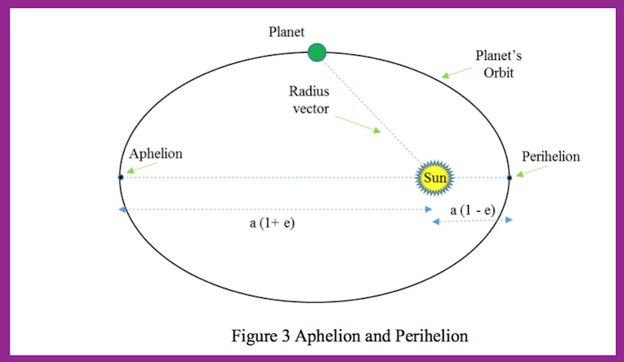
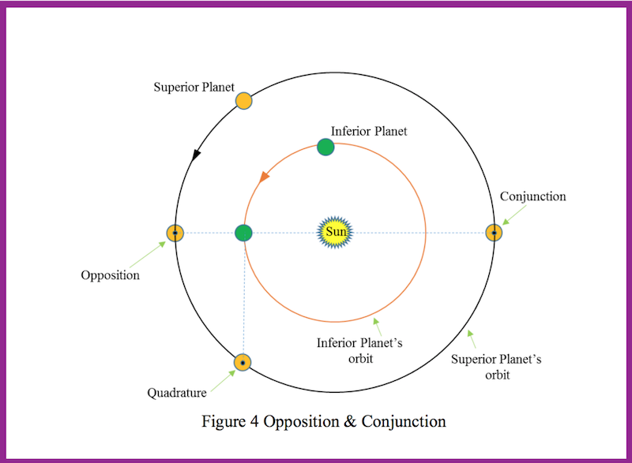
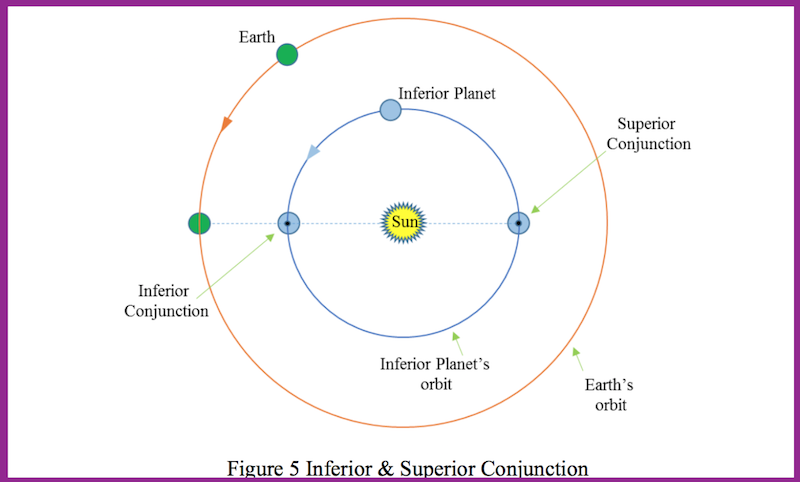
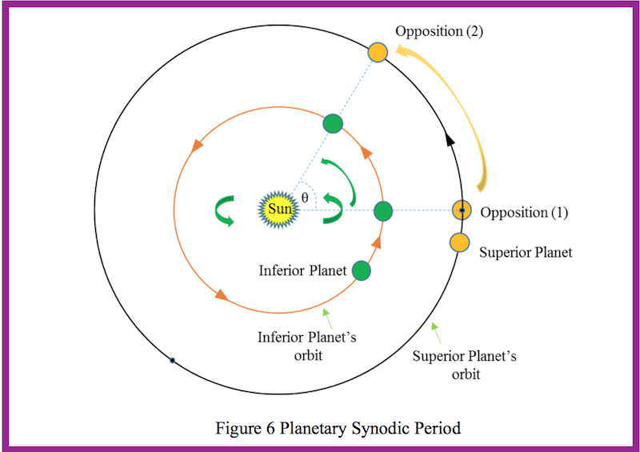
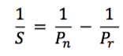
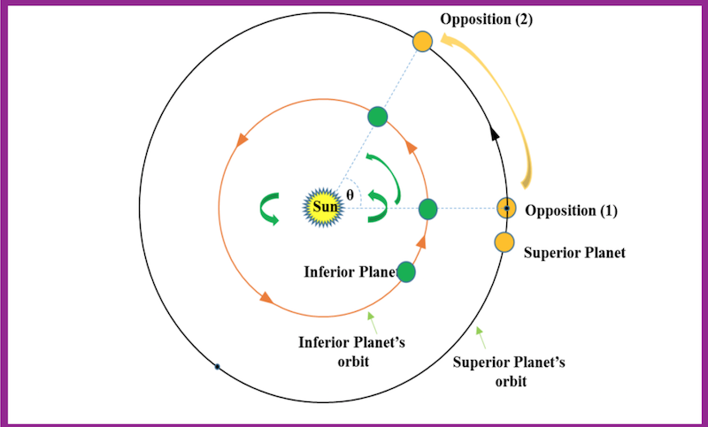
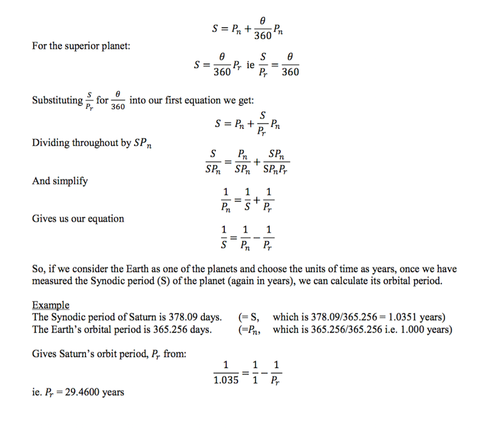

Hello!
Astronomy, the study of our Universe beyond the Earth, has good claim to be the original of all sciences. The Sun governs both our conscious and subconscious lives and has been revered by humankind throughout history. All religions have at least a strongly implied veneration for the Sun, and indeed even in secular societies today we see the roots of our ancient worships. One of the best days of the week of course is named after the Sun! Without the Sun no life on Earth would exist, and in fact, there would be no Earth. It’s no understatement to say that the Sun gives and sustains all life here on our home planet. But we know that there are many dangers above our atmosphere. Whilst the Sun gives life, it can and will day one day also destroy all life on Earth. (Don’t worry, we have a few billion years yet).
Latest SSIG feeds
-
23June
Tridymite found on Mars
ridymite as far as we know requires volcanic activity - so this made it to the surface of mars. So was mars quite active in the past?
Check it out -
21June
Nasa JUNO vid
The closest encounter with Jupiter EVER
Watch the vid
SSIG Astronomy
Neil Taylor
Neil is SSIG's main writer for all our Astro bloggs, in what is to be a series on educational astronomy blogs. Upcoming topics include.
And it’s not only the Sun we need to be mindful of. The collision of Asteroids or Comets on the Earth has, we know, caused utter devastation throughout geological time. Many of us will have seen the Chelyabinsk meteor on 15th Feb 2013. This was caused by a very small (20 metre sized) ‘Apollo’ class asteroid. The 180km diameter Chicxulub crater in Mexico was formed 66 million years ago by the impact of an object ~10km in dimension coincided with a mass-species extinction. A lot’s been said and written of the threat of asteroid strikes, some of it good but much is just Hollywood style fantasy.
We live in an outstanding time of discovery and space probes are literally sending us new data on a daily basis. The SOHO (Solar and Heliospheric Observatory) and SDO (Solar Dynamics Observatory) missions to observe the Sun, the Rosseta probe landing sensors on a comet, the New Horizons probe to Pluto and beyond; these are just a very few of the many probes which have revealed both spectacular, and remarkably unexpected results. And several more are in preparation for flight from the European Space Agency (ESA), NASA, and other nations.
This series of articles will look at the science behind our Sun, and the nature and threat from Asteroids. We will look at what we know about the Sun, and moreover how we know this. We will discover how the Sun produces its power (yes, nuclear fusion many of you will be able to answer), but why doesn’t it react explosively? We will look at how the Sun came into being; its structure; its radiation and how this gets transported to us. We will review its features such as sunspots, prominences, flares, and the rather well named Coronal Mass Ejections. We will also look at its destiny. On the way to this we will come across electron degeneracy, and so will take an interlude looking at neutron degeneracy and the ‘creation’ of exotic objects such as Pulsars and Black holes.
For our review of Asteroids, we will find out where they are, how their paths around the Sun (their orbits) can and do change / get changed. We will quantify the Near Earth Asteroids (NEAs) and see how many are Potentially Hazardous Asteroids (PHAs) – the ones that could splat us! We will see how Asteroids are named and importantly, how they are uniquely and individually identified when observed from Earth. We will review what they are, and where they came from. And again and most appropriately, how we think know all this!
Our series will run over the next few months and aims to tell you more about both our Sun and the solar system Asteroids, probably by alternating the two topics. Whilst many folks will be comfortable with viewing the images from telescopes and space probes, and these really are quite wonderful, an underlying and contextual knowledge of the science behind what we’re looking at makes the images ‘real’. We believe that to gain deep insight into what these images are really telling us, an understanding of some of the physics and mathematics is essential. The illustrated astronomy books are good but we can go much further than they do. Whilst some of the areas we cover are technical and mathematical in nature (broadly equivalent to undergraduate level) don’t worry! The physics and maths in this series will all be explained in full and our articles will be written so they can be read without fully understanding the complex parts. So, if you really must you’ll be able to skip the maths bits ☺
The close approach of Mars has been in the news recently and its outstanding brightness has been easily seen in the evening sky. The term opposition has been used in the press, but how many people actually understand that term? And when will Mars be at ‘opposition’ next?
Our series begins by taking a brief primer (a perhaps a refresh?) of orbits. Answering the Mars opposition question is here in our first article!
Good. You’re still here! So let’s look at orbits and the key parameters used to describe them.
Planetary Orbits
The Sun is the most massive object in the Solar system and therefore the gravity it exerts dominates the movement of the planets. All the planets move around the Sun in Elliptical orbits. To be precise, the Sun and the planet(s) move around their common centre of gravity but as the Sun is more than 1000 times as massive as Jupiter (which itself is more than 300 times more massive that the Earth), this is a nuance that we can safely ignore.
An ellipse is a closed shape a bit like a flattened circle (in fact, a circle is a special sort of ellipse).
The ellipse is defined by a number of elements, the key ones being:
Semi-major axis (a)
This can be thought of as the average distance of the planet from the Sun
Eccentricity (e)
This is the degree to which the ellipse is flattened. An ellipse has two focuses and in the planets orbits the Sun is at one focus and the other focus is empty. A circle is a special case of an ellipse where the eccentricity is 0. Other special cases of ellipses are where the eccentricity is equal to 1; this is called a parabola or parabolic orbit and is an open orbit, ie it stretches out forever.
The case where the eccentricity is more than 1 is called a hyperbola. This sort of ‘orbit’ again is an open orbit and is only really used to describe things like ‘fly-pasts’ and interactions where the two objects (eg a spacecraft and a planet) are not orbiting each other. It really better describes an arc.
Inclination (i)
This is the slant of the orbit (see figure 2). The slant is measured against a reference frame and the one used in the description of the Solar System is the ‘Ecliptic’. The ecliptic is the orbital plane of the Earth’s orbit, ie the path of the Earth as it moves around the Sun

Orbital Period
This is the time that it takes for the planet to complete one full revolution of the Sun. It is also sometimes referred to as the Sidereal period.
There are several special points in a planet’s orbit. Two of those often used are:
- Aphelion – which is the point in the planet’s orbit when it is furthest away from the Sun; and
- Perihelion – the point in the orbit when the planet is closest to the Sun.

There are just a few more definitions we will need before answering our question about Mars’s opposition. These are special points in a planet’s orbit compared to where the Earth is in its orbit.
An ‘Inferior’ planet is a planet which is closer to the Sun than the Earth./p>
A ‘Superior’ planet is a planet which is further away from the Sun than the Earth.

Opposition
Is where a Superior planet, as observed from Earth, is in directly the opposite part of the sky (180 degrees) to the direction of the Sun.
ConjunctionIs where a Superior planet is in exactly the same direction as the Sun. When the planet is at conjunction we cannot see it from Earth as it would not only be daylight, but the planet would more than likely be hidden behind the Sun.
Inferior and Superior ConjunctionIn the case where the planet is an inferior planet, the planet’s ‘opposition’ is actually equivalent to what is termed ‘inferior conjunction’. See figure 5

Synodic Period
The Synodic period of a planet is the time period between successive orbital configurations. It is usually measured as the time between consecutive Oppositions when viewed from the Earth. So for example, the Moon’s synodic period in its orbit around the Earth would be the time between one full moon and the next full moon.
The Synodic period is important because from an observational point of view, it tells us when the planet will be closest to us, and so best seen. From a historical point of view, it was also crucial in determining the size of the solar system as the Synodic period of a planet can be used to calculate a planet’s orbital period.
Planets don’t all move at the same speed in their orbit. Planets further away from the Sun move more slowly. Mercury, the closest major planet to the Sun, takes only 88 days to go around (Orbit) the Sun. Venus takes 224 days, but Jupiter, much more remote to the Sun than the Earth, takes almost 12 years to complete one orbit. Neptune, which takes 164 years to complete one revolution, has only just completed one orbit since its discovery in 1846.
The time when a planet is at Opposition, or Inferior Conjunction, can be accurately observed. The time until the next alignment (the next opposition) happens will be the time that it takes for the Earth to do one orbit, and then if we are looking for the next Opposition with Jupiter, the Earth will need to ‘catch-up’ a bit as Jupiter will have moved on in its orbit.
If the planet we are looking at is a long way from the Sun, the planet will only have moved a small (angular) distance so we’ll catch up relative quickly. If the planet is nearer to the Sun, it will be moving quicker in its orbit, will have covered more angular distance, and so it will take the Earth longer to catch up.
Neptune, with an average distance (semi-major axis) of 30AU from the Sun (the AU – Astronomical Unit – is the distance of the Earth’s semi-major axis), has a Synodic period as seen from the Earth of 367.5 days; ie pretty close to a year. Mars on the other hand with a semi major axis of just 1.52 AU from the Sun has a Synodic period of 779.9 days, more than 2 years!
Pre-telescope era astronomers knew and could measure the time when a planet was at Orbital Opposition (in exactly the ‘opposite’ direction in the sky to where the Sun was – hence the naming). By measuring the time between successive oppositions a planet’s Synodic period can be determined
Once we know the Synodic period, the orbital period can be found. If we define the following terms:
The period of revolution of the inferior planet (the planet closer to the Sun) as: Pn
The period of revolution of the superior planet (the planet further from the Sun) as: Pr
And the Synodic period is known by: S
Then the orbit periods and the Synodic period can be calculated by using the formula

(How this formula is derived is shown in at the end of this article)
So, if we consider the Earth as one of the planets and choose the units of time as years, once we have measured the Synodic period (S) of the planet, we can calculate its orbital period.
Now the important thing about the Synodic period of a planet is that it can easily and readily be measured by observations. It can be used to determine the planet’s orbital period and, once we know this, we can find the semi-major axis of the planet and hence the scale of the Solar System become known to us. Precisely how… we’ll look at in our next article!
Article 1 appendix: Derivation of Synodic Period formula.
The following method is a bit of a cheat’s method! Often you will see Synodic period formulae derived from something called the mean-anomaly. The result is the same but our derivation here is more intuitive (and less complicated ☺ ).
Define the following terms:
Pn As the orbital period of the inferior planet (the planet closer to the Sun);
Pr the orbital period of the superior planet (the planet further from the Sun); and
S as the Synodic period
For the inferior planet:
